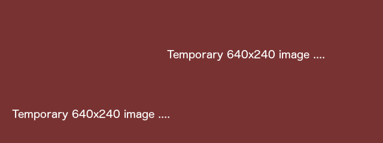

This is an illustrated introduction to the angular-hierarchical-route module which purpose is to help you build and use routes in your AngularJS app.
The README file provides a more succinct version of this content.

[1] Building routes

Before the app starts offering its services to the users, the route gets assembled ...

... with the $routeProvider of ngRoute when configuring your application AngularJS module:
angular.module('sample.routes', ['ngRoute'])
.config(['$routeProvider', function($routeProvider) {
$routeProvider.when('/home', {templateUrl: 'home/home.html',
controller: 'HomeCtrl'});
// ...
}]);
When you want to associate several routes to a view (displayed with the ng-view directive), you can use this module to create a hierarchical route. A hierarchical route functions as an underground line:

A hierarchical route as an underground line has places where you can join and stop: like an underground station. As same as a station belongs to an underground line, a route that belongs to a hierarchical route.

[2] Defining hierarchical routes
To define a hierarchical route, you need to inject the hierarchyProvider in the config method of your module:
angular.module('sample.routes', ['ngRoute', 'angularHierarchicalRoute'])
.config(['$routeProvider', 'hierarchyProvider',
function($routeProvider, hierarchyProvider) {
hierarchyProvider.add({
rootPath: '/home',
templateUrl: 'home/home.html',
controller: 'HomeCtrl'})
.callableFrom('/home','home')
.callableFrom('/home/:countryId','choose city')
// ...
.registerWith($routeProvider);All routes in the hierarchy share the same view and controller. The rootPath must be one of the routes in your hierarchy and is the default entry point to your view.
Finally you register your hierarchical route with $routeProvider .
When all your routes are created, your application can start receiving users.

Welcome to GitHub Pages.
This automatic page generator is the easiest way to create beautiful pages for all of your projects. Author your page content here using GitHub Flavored Markdown, select a template crafted by a designer, and publish. After your page is generated, you can check out the new branch:
$ cd your_repo_root/repo_name
$ git fetch origin
$ git checkout gh-pages
If you're using the GitHub for Mac, simply sync your repository and you'll see the new branch.
Designer Templates
We've crafted some handsome templates for you to use. Go ahead and continue to layouts to browse through them. You can easily go back to edit your page before publishing. After publishing your page, you can revisit the page generator and switch to another theme. Your Page content will be preserved if it remained markdown format.
Rather Drive Stick?
If you prefer to not use the automatic generator, push a branch named gh-pages to your repository to create a page manually. In addition to supporting regular HTML content, GitHub Pages support Jekyll, a simple, blog aware static site generator written by our own Tom Preston-Werner. Jekyll makes it easy to create site-wide headers and footers without having to copy them across every page. It also offers intelligent blog support and other advanced templating features.
Authors and Contributors
You can @mention a GitHub username to generate a link to their profile. The resulting <a> element will link to the contributor's GitHub Profile. For example: In 2007, Chris Wanstrath (@defunkt), PJ Hyett (@pjhyett), and Tom Preston-Werner (@mojombo) founded GitHub.
Support or Contact
Having trouble with Pages? Check out the documentation at https://help.github.com/pages or contact support@github.com and we’ll help you sort it out.